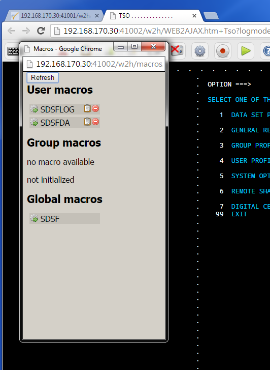

An example of using web services with Virtel Integration¶
Web services (WS) are one of the foundation blocks of the Services Oriented Architecture blue print. This blue print forms the basis on which many of today’s e-commerce infrastructures are built, but what is a web services? Simply put, web services are discoverable services that are made available from a business’s web server for web users or other web-connected programs to use. Client programs or systems interact with the web service using SOAP (Simple Object Access Protocol) messages, which are conveyed using the standardized protocols of HTTP with XML serialization. The support web services or operations, message formats and data structures supported by a web service are described by an XML document using Web Service Data Language (WSDL). Web services are discoverable through UDDI servers or equivalent. UDDI (Universal Description, Discovery, and Integration) is an XML based registry for businesses worldwide to list themselves on the Internet. Its ultimate goal is to streamline online transactions by enabling companies to find one another on the Web and make their systems interoperable for e-commerce. Once a web service has been identified it can be used by exploiting the contents of the published WSDL. When using web services, message exchange is through the open and standardized SOAP format. As an example, a program wishing to know the current exchange rate between two currencies can send a SOAP message request to a web service provider and the results will be returned in a SOAP message response.
In this newsletter we demonstrate how Virtel can interface between a legacy batch application and a web service to retrieve the exchange rate between two currencies. The exchange rate web service is provided by a web service hosted by www.webservicex.net.
An overview of the service is displayed below.

Figure 1 - Overview of web services elements.
Breaking down the individual actions we can anaylze the components involved.
- Connection to the Virtel Server is through a batch application. In this case we are using REXX to connect to the Virtel server using REXX socket fuctions. The batch application runs as a batch task invoking TCPIP to initialize and connect a socket to VIRTEL. The batch application sends a URL request to VIRTEL, effectively emulatiing a browser. The URL request identifies the VIRTEL line, template and transaction. Virtel is unaware that it is conversing with a batch program. The following is the JCL that invokes the REXX batch application.
//LIBS JCLLIB ORDER=SPTHOLT.VIRTEL.REXX
//*
//* LINE 41002 CLIHOST
//* LINE 41102 EDSHOST
//* LINE 41001 W2HHOST
//*
//CLIENT EXEC ISPF,HLQ=ISP
PROFILE PREFIX(SPTHOLT)
ISPSTART CMD(%RXCVIRT)
//REQUESTS DD *
192.168.170.30:41102 /ws1.html+ws3?FromCurrency=EUR&ToCurrency=GBP
/*
When running the REXX batch application the following URL is sent to Virtel:-
SEND-> GET /WS1.HTML+WS3?FROMCURRENCY=EUR&TOCURRENCY=GBP
HTTP/1.1 Host: 192.168.170.30:41002
Connection: keep-Accept:text/html,application/xhtml+xml,
application/xml;q=0.9,image/webp,*/*;q=0.8
Read from 192.168.170.30
Virtel IP Address: 192.168.170.30
LINE: HTTP-E
Port: 41102
Template: WS1.HTML
Transaction: WS3
Parameters: FROMCURRENCY=EUR,TOCURRENCY=GBP
When Virtel receives the URL it invokes the transaction associated with the Line related to the IP address and port. In this case it is line E-HTTP which has an entry point of EDSPOINT. Within that entry point, transaction WS3 is defined which has an initial scenario of SCENRATE. It is this initial scenario that connects to the web service, sends and receives the relevant SOAP messages and returns the results to the batch application. This is an example of Virtel’s web integration.
The user elements involved in this stage of the transaction are the batch application, REXX code RXCVIRT, the html template WS1.HTML that Virtel will return, the presentation module code SCENRATE and the SOAP message template exchange.xml . The template will contain the response from the web service. Let’s take a look at these user elements. The template looks like this:-
{kind=link}
WS1.HTML
<!DOCTYPE html>
<!--
To change this license header, choose License Headers in Project
Properties.
To change this template file, choose Tools \| Templates
and open the template in the editor.
-->
<html>
<head>
<!--VIRTEL start="{{{" end="}}}" -->
<title>Web Services Example 1</title>
<meta charset="UTF-8">
<meta name="viewport" content="width=device-width, initial-scale=1.0">
</head>
<body>
Answer is {{{CURRENT-VALUE-OF "CANSWER"}}}
</body>
</html>
The Virtel tag language is embedded in the html element to obtain the contents of the variable CANSWER which will contain the results from the web service. This is an example of the Virtel Web Access toolkit. This user element is used at the end of the scenario when Virtel sends the response to the initial URL that was initial posted by the REXX batch application. If we trace the Virtel line E-HTTP when we run the batch application we can see the data flow.
Outbound Message from batch application
E-HTTP HTTP REQUEST FROM 192.168.170.030:02027
13:03:57.12
00000 47455420 2F575331 2E48544D 4C2B5753 333F4652 4F4D4355 5252454E 43593D45 *GET /WS1.HTML+WS3?FROMCURRENCY=E*
00020 55522654 4F435552 52454E43 593D4742 50202020 20202020 20202020 20202020 *UR&TOCURRENCY=GBP *
00040 48545450 2F312E31 0D0A486F 73743A20 3139322E 3136382E 3137302E 33303A34 *HTTP/1.1..Host: 192.168.170.30:4*
00060 31303032 0D0A436F 6E6E6563 74696F6E 3A206B65 65702D61 6C697665 0D0A4163 *1002..Connection: keep-alive..Ac*
00080 63657074 3A207465 78742F68 746D6C2C 6170706C 69636174 696F6E2F 7868746D *cept: text/html,application/xhtm*
000A0 6C2B786D 6C2C6170 706C6963 6174696F 6E2F786D 6C3B713D 302E392C 696D6167 *l+xml,application/xml;q=0.9,imag*
000C0 652F7765 62702C2A 2F2A3B71 3D302E38 0D0A0D0A *e/webp,*/*;q=0.8.... *
Inbound Message flow to batch application
E-HTTP HTTP RESPONSE TO 192.168.170.030:02027
13:03:57.62
00000 48545450 2F312E31 20323030 204F6B0D 0A536572 7665723A 20566972 74656C2F *HTTP/1.1 200 Ok..Server: Virtel/*
00020 342E3534 0D0A4461 74653A20 53756E2C 20323220 4D617220 32303135 2031323A *4.54..Date: Sun, 22 Mar 2015 12:*
00040 30333A35 3720474D 54200D0A 45787069 7265733A 20300D0A 436F6E74 656E742D *03:57 GMT ..Expires: 0..Content-*
00060 6C656E67 74683A20 30303030 30303037 0D0A436F 6E74656E 742D7479 70653A20 *length: 00000007..Content-type: *
00080 74657874 2F68746D 6C0D0A0D 0A30302E 37323336 *text/html....00.7236 *
Note
The inbound message is not using the template WS1.HTML in the above example, but rather just returning the CANSWER variable.
The scenario associated with the transaction WS3 is a Virtel initial scenario. It is defined with the following attributes:-
 Figure 3 - WS3 Transaction definition
The key points are the Application type 2, a VIRTEL program, and TIOA at logon set to &/S which initiates the VIRTEL presentation module SCENRATE that contains the INITIAL scenario. It is the scenario within this presentation module that does all the work. See Appendix A for a complete list of the presentation module SCENRATE. This module must be assembled. The presentation module contains only one scenario, an initial scenario which is invoked when an &/S order is found in a TIOA connection script (see “Connection / Disconnection Scripts” in the VIRTEL Connectivity Reference manual).
The layout of the scenario within the presentation module SCENRATE can be defined as an output structure, defined between the OUTPUT MAP$ and OUTPUT MAP$ END, followed by the SCENARIO logic. The logic steps of the scenario can be broken down thus:-
- Create variables from URL – FROMCURRENCY, TOCURRENCY
- Set variable SITE to URL of web services provider and access port - www.webservices.net:80
- Read in SOAP template from Virtel TRSF file – exchange.xml.
- Build options file for $POST SOAP request – OPTION$ in Virtel variable REQP.
- Send SOAP request to web services provider.
- Test results and depending on return code take appropriate action. This is achieved using a Virtel CASE$ statement.
- Copy Virtel ANSWER variable to a COMMAREA as mapped by the OUTPUT map area.
- Copy the formatted COMMAREA to a Virtel variable called CANSWER.
- Send template with CANSWER. This will cause the tagged area of the template WS1.HTML to be populated with the CANSWER variable or just send CANSWER variable.
- Disconnect the session with the batch application.
{kind=link}
The user elements involved in the SOAP message request is template exchange.xml. The XML file looks like:-
exchange.xml
<?xml version="1.0" encoding="UTF-8"?><!--VIRTEL start="{{{" end="}}}"
-->{{{ SET-CONTENT-TYPE "text/xml"}}}{{{SET-OUTPUT-ENCODING-UTF-8
""}}}{{{SET-LOCAL-OPTIONS (XML-ESCAPES)}}}
<soap12:Envelope xmlns:xsi="http://www.w3.org/2001/XMLSchema-instance"
xmlns:xsd="http://www.w3.org/2001/XMLSchema"
xmlns:soap12="http://www.w3.org/2003/05/soap-envelope">
<soap12:Body>
<ConversionRate xmlns="http://www.webserviceX.NET/">
<FromCurrency>{{{TRIMMED-VALUE-OF "FromCurrency"}}}</FromCurrency>
<ToCurrency>{{{TRIMMED-VALUE-OF "ToCurrency"}}}</ToCurrency>
</ConversionRate>
</soap12:Body>
</soap12:Envelope>
The scenario takes the parameters from the URL and places them in Virtel variables. This is an example of how Virtel’s integration works; through a combination of scenario programmable elements and an Initial scenario. The following is an extract from the scenario showing the relevant COPY$ statements:-
START SET$ ENCODING,UTF-8,'IBM1147'
COPY$ INPUT-TO-VARIABLE,FIELD='FROMCURRENCY', *
VAR='FROMCURRENCY', *
TYPE=REPLACE
*
COPY$ INPUT-TO-VARIABLE,FIELD='TOCURRENCY', *
VAR='TOCURRENCY', *
TYPE=REPLACE
*
Again, Virtel tag language is used to populate the template with the correct information for the web services request. The “TRIMMED-VALUE-OF” of statements extract the values from the Virtel variables and place them in the XML SOAP message template.
The OPTION$ and SEND$ complete the SOAP message, sending it to the web service via the O-HHTP line, as identified in the SEND$ statement:-
SENDREQ OPTION$ FOR-HTTP,(METHOD,'POST'),(SITE,'*SITE'),(TO, *
'/CurrencyConvertor.asmx'), *
(HEADER,'Content-Type: application/soap+xml'), *
(FILE-OUT,'REQFILE'),(FILE-IN, *
'ANSWER'),(RET-CODE,'RETCODE'),TOVAR='REQP'
SEND$ TO-LINE,LINE='O-HTTP',PARMS='REQP',MAXTIME=1000, *
ERROR=NOTOK
An analysis of the VIRTEL LOG can see the request being sent out to the web services provider.
13.02.15 STC05752 VIR0200I LINE=E-HTTP,TRACE
13.02.15 STC05752 VIR0062I HTTP-EDS TRACE ACTIVE
13.03.57 STC05752 VIRT906I HTTP-EDS SOCKET 00020000 CALL FROM 192.168.170.030:02027
13.03.57 STC05752 VIRHT51I HTTP-EDS CONNECTING EHLOC015 TO 192.168.170.030:02027
13.03.57 STC05752 VIRHT51I HTTP-OUT CONNECTING EHLOC015 TO 173.201.044.188:00080
13.03.57 STC05752 VIRT922W HTTP-OUT SOCKET 00000000 ENDED FOR 173.201.044.188:00080
13.03.57 STC05752 VIR0052I EHLOC015 DISCONNECTED AFTER 0 MINUTES
13.03.57 STC05752 VIRT922W HTTP-EDS SOCKET 00020000 ENDED FOR 192.168.170.030:020
The CASE$ statement following the SEND$ tests the return code from the web service and determines the appropriate action. Return codes beginning with 2 or 5 are accepted as OK, whereas anything else is considered not OK. The ANSWER variable is filled with the data returned from the web service:-
CASE$ 'RETCODE',(BEGIN,'2',OK),(BEGIN,'5',OK), *
ELSE=NOTOK
*
NOTOK COPY$ VALUE-TO-VARIABLE,VAR='ANSWER',VALUE='KO',TYPE=REPLACE
OK EQU *
The ANSWER variable contains the result from the web service. This is converted to EBCDIC and then copied to the COMMAREA variable. The COMMAREA variable is then copied to a Virtel CANSWER variable and passed back to the batch application through the template WS1.HTML:-
CONVERT$ ASCII-TO-EBCDIC,VAR='ANSWER'
OUTPUT MAP$ FROM-VARIABLE,VAR='ANSWER' Answer -> Commarea
OUTPUT MAP$ TO-VARIABLE,VAR='CANSWER' Commarea -> Variable
CONVERT$ EBCDIC-TO-ASCII,VAR='CANSWER'
SEND$ AS-ANSWER,VAR='CANSWER',TYPE='text/html'
ACTION$ DISCONNECT
The COMMAREA variable is a special variable that Virtel can use to interface with application programs that communicate through a COMMAREA structure, such as CICS or IMS. The Virtel modernisation and integration tool kits provide significate program capability to utilize a COMMAREA intermediate buffer in processing requests and returning responses between Virtel and COMMAREA related programs.
See “Virtel Modernisation and Virtel Integration chapters “ in the VIRTEL Web Access Guide manual) for more information.
In the Virtel line trace for the line O-HTTP the SOAP messages can be traced:-
Outbound SOAP message to web services server
*POST /CurrencyConvertor.asmx HTT*
*P/1.1..Host: www.webservicex.net*
*:80..Content-Type: application/s*
*oap+xml..Content-length: 0000042*
*3....<?xml version="1.0" encodin*
*g="UTF-8"?>..<soap12:Envelope xm*
*lns:xsi="http://www.w3.org/2001/*
*XMLSchema-instance" xmlns:xsd="h*
*ttp://www.w3.org/2001/XMLSchema"*
* xmlns:soap12="http://www.w3.org*
*/2003/05/soap-envelope">.. <soa*
*p12:Body>.. <ConversionRate x*
*mlns="http://www.webserviceX.NET*
*/">.. <FromCurrency>EUR</Fr*
*omCurrency>.. <ToCurrency>G*
*BP</ToCurrency>.. </Conversio*
*nRate>.. </soap12:Body>..</soap*
*12:Envelope> *
Inbound SOAP message from web services server
*HTTP/1.1 200 OK..Cache-Control: *
*private, max-age=0..Content-Leng*
*th: 380..Content-Type: applicati*
*on/soap+xml; charset=utf-8..Serv*
*er: Microsoft-IIS/7.0..X-AspNet-*
*Version: 4.0.30319..X-Powered-By*
*: ASP.NET..Date: Sat, 21 Mar 201*
*5 15:58:29 GMT....<?xml version=*
*"1.0" encoding="utf-8"?><soap:En*
*velope xmlns:soap="http://www.w3*
*.org/2003/05/soap-envelope" xmln*
*s:xsi="http://www.w3.org/2001/XM*
*LSchema-instance" xmlns:xsd="htt*
*p://www.w3.org/2001/XMLSchema"><*bastet
*soap:Body><ConversionRateRespons*
*e xmlns="http://www.webserviceX.*
*NET/"><ConversionRateResult>0.72*
*36</ConversionRateResult></Conve*
*rsionRateResponse></soap:Body></*
*soap:Envelope> *
The web services provided by www.webserviceX.net can be discovered and exploited by analysis of the associated WSDLs. The home page of the site lists the most popular web services that the provider supports:-

The Web Service that the batch application invokes is Currency Calculator. This web service provides realtime exchange rate data for a large number of global currencies. If we view the WSDL of the Currency convertor we can see the operations provided by this particular service. The WSDL can be seen by using the following URL:-
http://www.webservicex.net/CurrencyConvertor.asmx?WSDL
In the service element of the WSDL we can see that the web service supports different protocols to the same service, that being CurrencyConvertor. The web service supports SOAP 1.0, SOAP 1.2, HTTP GET and HTTP POST. In this example the SOAP 1.2 POST implementation of CurrencyConvertor is being used:-
<wsdl:service name="CurrencyConvertor">
<wsdl:port name="CurrencyConvertorSoap" binding="tns:CurrencyConvertorSoap">
<soap:address location="http://www.webservicex.net/CurrencyConvertor.asmx"/>
</wsdl:port>
<wsdl:port name="CurrencyConvertorSoap12" binding="tns:CurrencyConvertorSoap12">
<soap12:address location="http://www.webservicex.net/CurrencyConvertor.asmx"/>
</wsdl:port>
<wsdl:port name="CurrencyConvertorHttpGet" binding="tns:CurrencyConvertorHttpGet">
<http:address location="http://www.webservicex.net/CurrencyConvertor.asmx"/>
</wsdl:port>
<wsdl:port name="CurrencyConvertorHttpPost" binding="tns:CurrencyConvertorHttpPost">
<http:address location="http://www.webservicex.net/CurrencyConvertor.asmx"/>
</wsdl:port>
</wsdl:service>
It is not the intention of the newsletter to delve into the WSDL structure, there are many excellent books, journals and internet pages devoted to this subject. The following URL,
http://www.webservicex.net/CurrencyConvertor.asmx?op=ConversionRate
provides details on the structure on the SOAP request and response messages. This is useful for building the exchange.xml template and for analysing the response message within the scenario.
SOAP 1.2 Example
The following is a sample SOAP 1.2 request and response. The placeholders shown need to be replaced with actual values.
REQUEST message
POST /CurrencyConvertor.asmx HTTP/1.1
Host: www.webservicex.net
Content-Type: application/soap+xml; charset=utf-8
Content-Length: length
<?xml version="1.0" encoding="utf-8"?>
<soap12:Envelope
xmlns:xsi="http://www.w3.org/2001/XMLSchema-instance"
xmlns:xsd="http://www.w3.org/2001/XMLSchema"
xmlns:soap12="http://www.w3.org/2003/05/soap-envelope">
<soap12:Body>
<ConversionRate xmlns="http://www.webserviceX.NET/">
<FromCurrency>**AFA**\ </FromCurrency>
<ToCurrency>**DZD**\ </ToCurrency>
</ConversionRate>
</soap12:Body>
</soap12:Envelope>
RESPONSE message
<?xml version="1.0" encoding="utf-8"?>
<soap12:Envelope
xmlns:xsi="http://www.w3.org/2001/XMLSchema-instance"
xmlns:xsd="http://www.w3.org/2001/XMLSchema"
xmlns:soap12="http://www.w3.org/2003/05/soap-envelope">
<soap12:Body>
<ConversionRateResponse xmlns="http://www.webserviceX.NET/">
<ConversionRateResult>double</ConversionRateResult>
</ConversionRateResponse>
</soap12:Body>
</soap12:Envelope>
- After receiving the SOAP response the scenario will search for the element ConversionRateResult and extract the value and placing in to the Virtel ANSWER variable. If there is an error, the ConversionRateResult value will contain details of the web services error. The scenario will copy this error message to the ANSWER variable. In both cases the results are contained within the ConversionRateResult element. These operations are executed through the MAP$ EVENTUAL-AREA statement:-
MAP$ EVENTUAL-AREA,FROM-CONSTANT,'0',WHEN=(ELEMENT, *
'ConversionRateResult'),EVENT='Response',LENGTH=6
The RESPONSE format area is designated by the O00000001 MAP$ BEGIN, EVENT=RESPONSE and terminated by the O00000001 MAP$ END. The value is mapped by the MAP$ AREA,WITH ‘ConversionRateResult’ statement:-
O0000001 MAP$ BEGIN,EVENT='Response'
MAP$ AREA,WITH='ConversionRateResult',TYPE=9,LENGTH=6
O0000001 MAP$ END
If the response message from the web service does not contain the element ConversionRateResult then the OFAULT area is mapped out within an XML structure in preparation to return to the batch application. The ‘fault’ elements will be extracted from the SOAP response:-
OFAULT MAP$ BEGIN,EVENT='Fault'
MAP$ AREA,WITH='faultcode',TYPE=X,LENGTH=32
MAP$ AREA,WITH='faultstring',TYPE=X,LENGTH=32
MAP$ AREA,WITH='faultactor',TYPE=X,LENGTH=32
MAP$ AREA,FROM-CONSTANT,' ',LENGTH=32
OFAULT MAP$ END
- When the batch application receives the response to the original URI request the answer will be contained within the WS1.HTML template, where the CANSWER area has been captured. The first character of the CANSWER area, as posted by the scenario, will either be a 0 or a 1. A zero indicates success, a one indicates an error:-
Result:
!DOCTYPE html>
<!-- To change this license header, choose License Headers in
Project Properties. To change this template file, choose Tools \|
Templates and open the template in the editor. -->
<html>
<head>
<title>Web Services Example 1</title>
<meta charset="UTF-8">
<meta name="viewport" content="width=device-width, initial-scale=1.0">
</head>
<body>
Answer is 00.7312 *[The first zero is a return code]*
</body>
</html>
Instead of returning the template, the scenario can just return the CANSWER variable within a HTTP response. This is achieved by adding the following three lines to the scenario:-
label CONVERT$ EBCDIC-TO-ASCII,VAR='CANSWER'
SEND$ AS-ANSWER,VAR='CANSWER',TYPE='text/html'
ACTION$ DISCONNECT
Instead of returning the template, the HTTP response will now just contain the variable CANSWER, which is all that is required by the batch application.
ISPSTART CMD(%RXCVIRT)
Result: 0.7312
Note
All the source related to this newsletter can be downloaded from the Virtel FTP web site. The file name is zostn2501506.zip.
Appendix A SCENRATE Scenario
SCENRATE SCREENS APPL=SCENRATE,EXEC=NO
SCENARIO INITIAL
*
* Output structure definition
*
OUTPUT MAP$ BEGIN
MAP$ EVENTUAL-AREA,FROM-CONSTANT,'0',WHEN=(ELEMENT, *
'ConversionRateResult'),EVENT='Response',LENGTH=6
MAP$ ELSETHEN-AREA,FROM-CONSTANT,'1',EVENT='Fault',LENGTH=1
OENV MAP$ BEGIN,TOP,WITH='soap:Envelope'
*HEADER MAP$ BEGIN,WITH='soap:Header'
*HEADER MAP$ END
OBODY MAP$ BEGIN,WITH='soap:Body'
*
OFAULT MAP$ BEGIN,EVENT='Fault'
MAP$ AREA,WITH='faultcode',TYPE=X,LENGTH=32
MAP$ AREA,WITH='faultstring',TYPE=X,LENGTH=32
MAP$ AREA,WITH='faultactor',TYPE=X,LENGTH=32
MAP$ AREA,FROM-CONSTANT,' ',LENGTH=32
OFAULT MAP$ END
*
O0000001 MAP$ BEGIN,EVENT='Response'
MAP$ AREA,WITH='ConversionRateResult',TYPE=9,LENGTH=6
O0000001 MAP$ END
*
OBODY MAP$ END
OENV MAP$ END
OUTPUT MAP$ END
*
START SET$ ENCODING,UTF-8,'IBM1147'
COPY$ INPUT-TO-VARIABLE,FIELD='FROMCURRENCY', *
VAR='FROMCURRENCY', *
TYPE=REPLACE
*
COPY$ INPUT-TO-VARIABLE,FIELD='TOCURRENCY', *
VAR='TOCURRENCY', *
TYPE=REPLACE
*
COPY$ VALUE-TO-VARIABLE,VAR='SITE', *
VALUE='www.webservicex.net:80', *
TYPE=REPLACE
*
COPY$ OUTPUT-FILE-TO-VARIABLE,FILE='exchange.xml', *
VAR='REQFILE'
*
SENDREQ OPTION$ FOR-HTTP,(METHOD,'POST'),(SITE,'*SITE'),(TO, *
'/CurrencyConvertor.asmx'), *
(HEADER,'Content-Type: application/soap+xml'), *
(FILE-OUT,'REQFILE'),(FILE-IN, *
'ANSWER'),(RET-CODE,'RETCODE'),TOVAR='REQP'
SEND$ TO-LINE,LINE='O-HTTP',PARMS='REQP',MAXTIME=1000, *
ERROR=NOTOK
CASE$ 'RETCODE',(BEGIN,'2',OK),(BEGIN,'5',OK), *
ELSE=NOTOK
*
NOTOK COPY$ VALUE-TO-VARIABLE,VAR='ANSWER',VALUE='KO',TYPE=REPLACE
OK EQU *
CONVERT$ ASCII-TO-EBCDIC,VAR='ANSWER'
OUTPUT MAP$ FROM-VARIABLE,VAR='ANSWER' Answer -> Commarea
OUTPUT MAP$ TO-VARIABLE,VAR='CANSWER' Commarea -> Variable
CONVERT$ EBCDIC-TO-ASCII,VAR='CANSWER'
SEND$ AS-ANSWER,VAR='CANSWER',TYPE='text/html'
ACTION$ DISCONNECT
*
SCENARIO END
SCRNEND
END
Appendix B RXCVIRT REXX CLIST
/*Rexx------------------------------------------------------------------
Syspertec
www.syspertec.com
Extract Batch call to Virtel to invoke web services
Author: Ed Holt
Maintenance
Date By Description
01/03/2015 ESH Created
Notes:
----------------------------------------------------------------------*/
trace 0
debug = 0
/*********************************************************************/
/* Open connection with Virtel */
/*********************************************************************/
call read_requests /* Read in control cards */
do i = 1 to requests.0
n = 1
clisock = ''
parse upper var requests.i string':'port url
parse upper var string ipaddr
ipaddress.0 = 1
ipaddress.1 = ipaddr
call init_sock
response = ''
request = build_request() /* Build request block */
call process /* Process request */
/***************************************************************/
/* Look for URL= in response. If found the request page from */
/* virtel. HTTP 302 */
/***************************************************************/
keyword="URL="
url = substr(search_line(keyword,response),length(keyword)+1)
if (url <> '') then do
request = build_request() /* Build request block */
call process /* Process request */
end
call clean_up /* Clean up socket */
end
exit 0
/***************************************************************/
/* read_requests */
/* */
/* Read in control cards */
/***************************************************************/
read_requests:
"EXECIO * DISKR REQUESTS ( FINIS STEM requests."
return
/***************************************************************/
/* build_request */
/* */
/* build request area */
/***************************************************************/
build_request:
http = "HTTP/1.1"
host = "Host: 192.168.170.30:41002"
connection = "Connection: keep-alive"
accept = "Accept: text/html,application/xhtml+xml"
accept = accept || ",application/xml;q=0.9,image/webp,*/*;q=0.8"
useragent = "User-Agent: Mozilla/5.0 (Windows NT 6.3; WOW64) AppleWebKit/537.36"
useragent = useragent || " (KHTML, like Gecko)"
useragent = useragent || " Chrome/40.0.2214.115 Safari/537.36"
acceptencoding = "Accept-Encoding: gzip, deflate, sdch"
acceptlanguage = "Accept-Language: en-US,en;q=0.8"
cookie = "Cookie: SYSLANG=en; SYSSTYL=BLUE; SYSPAGE=auto"
eol = "0d0a"x
request = "GET" url http || eol || host || eol
request = request || connection || eol
request = request || accept || eol
requesv = request || useragent || eol
requesw = request || acceptencoding || eol
requesx = request || acceptlanguage || eol
requesz = request || cookie || eol
request = request || eol
return request
/***************************************************************/
/* Process */
/* */
/* Send request to server and get response. */
/* Test for "Error" or "Shutdown". Also, if srchflag, check to */
/* see if data has been located in response buffer. */
/***************************************************************/
process:
do n=1 by 1 until n = ipaddress.0
data = get_data(ipaddress.n, request)
if word(data,1) ¬= 'Error' & request ¬= 'SHUTDOWN' then do
if srch ¬= '' & srchflag = 0 then
say "Search keyword " || srch || " not found."
end
if word(data,1) = 'Error' then
say "Server " || ipaddress.n " has experienced an error."
end
return
/***************************************************************/
/* init_sock */
/* */
/* Initialise socket */
/***************************************************************/
init_sock:
x='SOCKET'('SocketSetStatus') /* Socket already? */
if word(x,1)='0' then
x='SOCKET'('terminate')
x='SOCKET'('initialize','rsclient') /* Initialize Socket */
if word(x,1)¬='0' then do
say 'Error initialising rsclient'
exit
end
if ipaddress.n='none' then do /* Get our IP address */
x='SOCKET'('gethostid')
if word(x,1)¬='0' then do
say 'Error trying to get host id'
call clean_up
exit
end
else ipaddress.n=word(x,2)
end
x = 'SOCKET'('SOCKET') /* Open socket */
if word(x,1)¬='0' then do
say 'Error issuing socket'
call clean_up
exit
end
clisock=WORD(x,2) /* Get Socket ID */
x='SOCKET'('gethostname') /* Get host name */
if word(x,1)¬='0' then do
say 'Error getting host name'
call clean_up
exit
end
hostname = word(x,2)
x='SOCKET'('connect',clisock,'af_inet' port ipaddress.n)
if word(x,1) = '61' then do /* Socket refused */
call clean_up
return "Error - No connection with " || ipaddress.n
end
if debug == 1 then
say "Connected " || ipaddress.n /* Connect Success */
if word(x,1)¬='0' then do
call clean_up
return "Error - issuing af_net with " || ipaddress.n
end
return
/***************************************************************/
/* get_data */
/* */
/* Set up socket, send request buffer and get response buffer. */
/* Test for "Error" or "Shutdown". Also, if srchflag, check to */
/* see if data has been located in response buffer. */
/***************************************************************/
get_data:
if debug == 1 then
say "SEND->" request
senddata = EBCDIC_to_ASCII(request) /* Send Data */
x='SOCKET'('send',clisock,senddata) /* on socket */
if word(x,1)¬='0' then do
call clean_up
return "Error - issuing send " || ipaddress.n
end
response = '' /* Initialize response */
do
x='SOCKET'('read',clisock) /* Get data */
if word(x,1)¬='0' then do
parse var x . error
call clean_up
return "Error - issuing recv " || ipaddress.n
end
if debug == 1 then
say "Read from " || ipaddress.n
if word(x,2)=='0' then leave /* Null line? Abort */
parse var x . . dataline /* Get data and convert*/
dataline = ASCII_TO_EBCDIC(dataline) /* from a2e */
if debug == 1 then
say "RECV <-" dataline
response = dataline /* Build response buff.*/
do until index(dataline,'0d'x)=0 /* Remove any lf */
parse var dataline nextline '0d'x dataline
response = response || nextline /* Build response buff.*/
end
parse var response . 'text/html' answer 'HTTP' .
x = translate(answer,' ','25'x) /* Remove any LF */
answer = translate(x,' ','0d'x) /* Remove any CR */
answer = strip(answer)
rc = substr(answer,1,1)
result = substr(answer,2)
if (rc != 0) then
Say 'Error: 'result
else
say 'Result: 'result
end
return 0
/***************************************************************/
/* search_lines */
/* */
/* Search for argument within response buffer. */
/***************************************************************/
search_line:
parse arg needle,haystack
if index(haystack,needle) > 0 then do
str = substr(haystack,index(haystack,needle))
return substr(str,1,index(str,'"')-1)
end
return ''
/***************************************************************/
/* Clean_up */
/* */
/***************************************************************/
clean_up:
x='SOCKET'('Terminate','RSCLIENT')
if debug == 1 then
say "Terminate " || ipaddress.n
return 0
/***************************************************************/
/* EBCDIC To ASCII & ASCII To EBCDIC Translate Tables */
/***************************************************************/
ASCII_to_EBCDIC: Procedure
parse arg ASCII_data
a2etab = '00010203 372D2E2F 1605250B 0C0D0E0F'x || ,
'10111213 3C3D3226 18193F27 1C1D1E1F'x || ,
'405A7F7B 5B6C507D 4D5D5C4E 6B604B61'x || ,
'F0F1F2F3 F4F5F6F7 F8F97A5E 4C7E6E6F'x || ,
'7CC1C2C3 C4C5C6C7 C8C9D1D2 D3D4D5D6'x || ,
'D7D8D9E2 E3E4E5E6 E7E8E9AD E0BD5F6D'x || ,
'79818283 84858687 88899192 93949596'x || ,
'979899A2 A3A4A5A6 A7A8A9C0 4FD0A107'x || ,
'20212223 24150617 28292A2B 2C090A1B'x || ,
'30311A33 34353608 38393A3B 04143EFF'x || ,
'41AA4AB1 9FB26AB5 BBB49A8A B0CAAFBC'x || ,
'908FEAFA BEA0B6B3 9DDA9B8B B7B8B9AB'x || ,
'64656266 63679E68 74717273 78757677'x || ,
'AC69EDEE EBEFECBF 80FDFEFB FCBAAE59'x || ,
'44454246 43479C48 54515253 58555657'x || ,
'8C49CDCE CBCFCCE1 70DDDEDB DC8D8EDF'x
EBCDIC_data = translate(ASCII_data,a2etab)
return EBCDIC_data
EBCDIC_to_ASCII: Procedure
parse arg EBCDIC_data
e2atab = '00010203 04050607 08090A0B 0C0D0E0F'x || ,
'10111213 14151617 18191A1B 1C1D1E1F'x || ,
'20212223 24252627 28292A2B 2C2D2E2F'x || ,
'30313233 34353637 38393A3B 3C3D3E3F'x || ,
'20414243 44454647 48499C2E 3C282B7C'x || ,
'26515253 54555657 58592124 2A293B5F'x || ,
'2D2F6263 64656667 68697C2C 255F3E3F'x || ,
'70717273 74757677 78603A23 40273D22'x || ,
'80616263 64656667 68698A8B 8C8D8E8F'x || ,
'906A6B6C 6D6E6F70 71729A9B 9C9D9E9F'x || ,
'A07E7374 75767778 797AAAAB AC5BAEAF'x || ,
'B0B1B2B3 B4B5B6B7 B8B9BABB BC5DBEBF'x || ,
'7B414243 44454647 4849CACB CCCDCECF'x || ,
'7D4A4B4C 4D4E4F50 5152DADB DCDDDEDF'x || ,
'5CE15354 55565758 595AEAEB ECEDEEEF'x || ,
'30313233 34353637 3839FAFB FCFDFEFF'x
ASCII_data = translate(EBCDIC_data, e2atab)
return ASCII_data